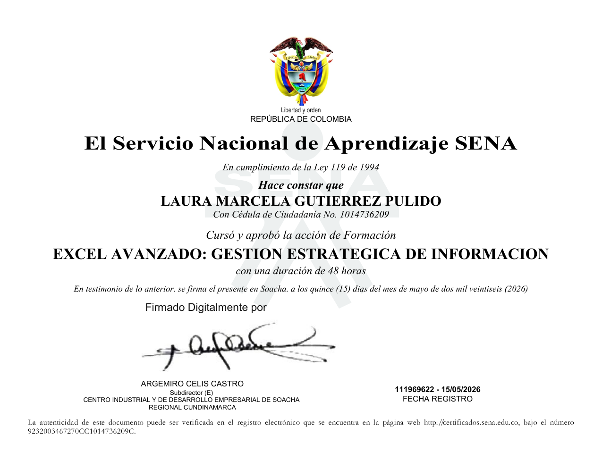
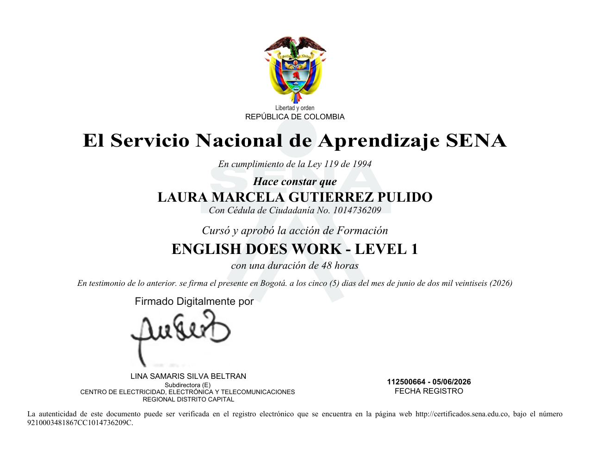
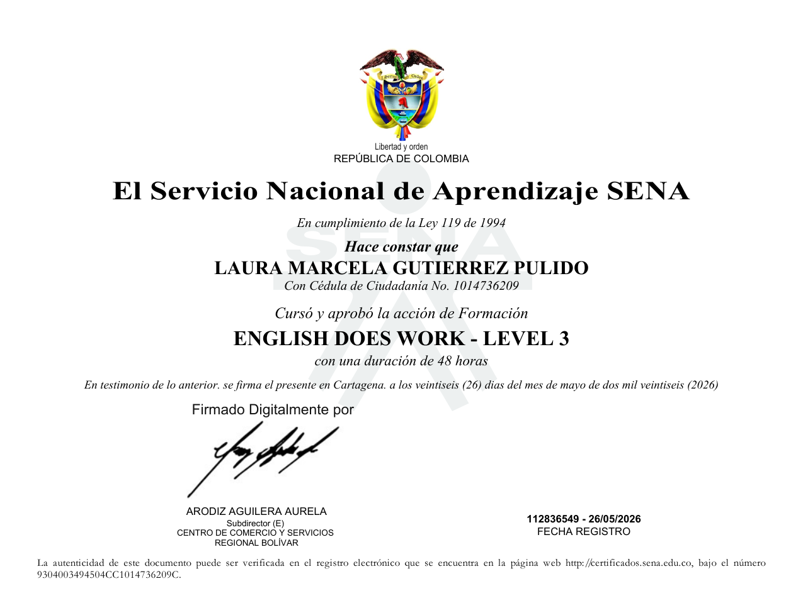

◴
Perfil profesional
Perfil creativo, organizado y orientado al aprendizaje continuo en desarrollo de software y soluciones digitales.
Portafolio personal
Creativa, organizada y apasionada por la tecnología, el diseño y la construcción de experiencias digitales limpias y memorables.
Laura Marcela Gutiérrez Pulido
Sobre mí
Ingeniería de Sistemas de la Universidad Catolica de Colombia. Me interesa la tecnología, el diseño y la creación de soluciones digitales con atención al detalle.
Estoy fortaleciendo mis bases en desarrollo web, programación, bases de datos y trabajo en equipo, con enfoque en seguir creciendo profesionalmente y aportar en proyectos reales.
Hoja de vida
Perfil creativo, organizado y orientado al aprendizaje continuo en desarrollo de software y soluciones digitales.
Ingeniería de Sistemas
Universidad Catolica de Colombia
Bachiller técnico graduada
Formación
Colegio Teresita de Lisieux.
Formación básica y desarrollo académico.
Colegio Teresita de Lisieux.
Fortalecimiento de habilidades y construcción del proyecto de vida.
Capacitaciones y aprendizaje adicional para ampliar mi perfil.
Ingeniería de Sistemas
Universidad Catolica de Colombia
Certificados

Microsoft Office
2026 Abrir PDF
Formación en idioma inglés
2026 Abrir PDF
Formación en idioma inglés
2026 Abrir PDFEn progreso
Aquí podré mostrar los cursos que estoy desarrollando en este momento.
ActualizandoProyectos
Plataforma desarrollada para apoyar procesos académicos mediante herramientas tecnológicas. Participé en el desarrollo del proyecto utilizando GitHub como sistema de control de versiones.
Ver proyecto →Proyecto colaborativo desarrollado utilizando GitLab. Participé en el manejo del repositorio y el desarrollo de funcionalidades junto con el equipo.
Ver repositorio →Contacto
Gracias por visitar mi portafolio ♡